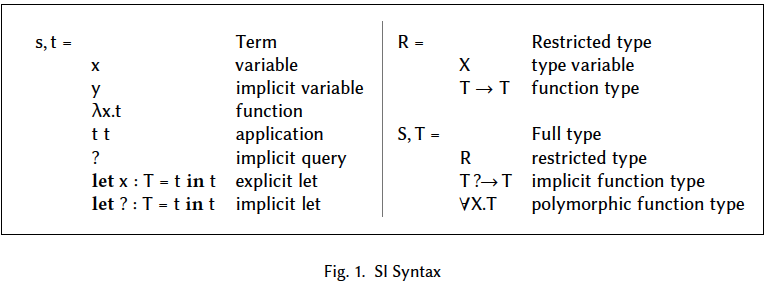
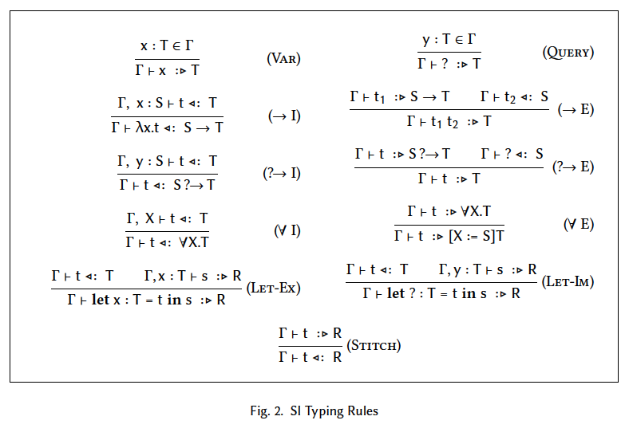

<!doctype html>
<html lang="ja">

	<head>
		<meta charset="utf-8">

    <title>Simplicitly</title>

		<meta name="description" content="Simplicitly">
		<meta name="author" content="水島宏太">

		<meta name="apple-mobile-web-app-capable" content="yes">
		<meta name="apple-mobile-web-app-status-bar-style" content="black-translucent">

		<meta name="viewport" content="width=device-width, initial-scale=1.0, maximum-scale=1.0, user-scalable=no, minimal-ui">

		<link rel="stylesheet" href="css/reveal.css">
		<link rel="stylesheet" href="css/theme/black.css" id="theme">
<style type='text/css'>     
  .reveal h1,               
  .reveal h2,               
  .reveal h3,               
  .reveal h4,               
  .reveal h5,               
  .reveal h6 {              
    text-transform: none;   
  }                         
</style>                    

		<!-- Code syntax highlighting -->
		<link rel="stylesheet" href="lib/css/zenburn.css">

		<!-- Printing and PDF exports -->
		<script>
			var link = document.createElement( 'link' );
			link.rel = 'stylesheet';
			link.type = 'text/css';
			link.href = window.location.search.match( /print-pdf/gi ) ? 'css/print/pdf.css' : 'css/print/paper.css';
			document.getElementsByTagName( 'head' )[0].appendChild( link );
		</script>

		<!--[if lt IE 9]>
		<script src="lib/js/html5shiv.js"></script>
		<![endif]-->
	</head>

	<body>

		<div class="reveal">

			<!-- Any section element inside of this container is displayed as a slide -->
<div class='slides'>
<section data-markdown data-separator='^\n---$'><script type='text/template'>

## Simplicitly
## 水島宏太

---

## 自己紹介

- Twitter ID: [@kmizu](https://twitter.com/kmizu)
- GitHub: [kmizu](https://github.com/kmizu)
- 言語オタク
- [Klassic](https://github.com/klassic/klassic)
- [Onion](https://github.com/onion-lang/onion)

---

### 紹介する論文

### Simplicitly: foundations and applications of
### implicit function types
### Martin Odersky, et al.
### POPL2018

- https://dl.acm.org/citation.cfm?id=3158130

---

### 概要

- 動機
  - モダンなプログラミング言語は、*コンテキスト*を定義するための方法を持っている
  - Scalaにはimplicit parameterがある
  - impliicit parameterは充分に抽象化されていない
- 貢献
  - _implicit function type_ を提案
  - 双方向の型チェックに基づいた形式化を提供
  - _implicit function type_ の能力を示すための様々な例を提示
- 実装
  - Scalaコンパイラ（Dotty）に実装

---

### 導入（１）-- 依存性の表現

- プログラミングで重要な問題の一つに依存性の表現方法がある
  - テキストは、依存するコンテキストがあって初めて理解可能
- ほとんどの手続き型言語は状態を大域状態として表現
  - モジュラーでない
  - 状態に影響を与えるアクションがあり、危険
- OOPLはきめ細かい依存性の注入メカニズムを発明

---

### 導入（２） -- FPにおける依存性

- FPでは依存性は引数で表現される
  - 引数爆発の問題がある
  - 引数爆発の問題を避けるために色々発明された
- 関数型の依存性を表現するための方法は未だにチャレンジング

---

### 導入（３） -- Scalaにおける依存性

- implicit parameterを使う
  - 型クラス、設定など
  - 多くの引数を渡し回すことを防げる
- implicit parameterだけでは繰り返しを完全に除去できない
  - Dottyコンパイラには2600箇所の `(implicit ctx: Context)`
- Dottyは _implicit function type_ によって繰り返しを防ぐ

---

### Implicit Function Type

- implicit functionを表現するファーストクラスの型
  - implicit function: implicit parameterを持った関数
- implicit function typeを持った核計算SIを開発
  - SIからSystem Fへのマッピングを提供
- implicit parameterの解決が終わった後は普通のScala


---

### implicit parameterからimplicit function typeへ（１）

- 普通の計算

```scala
val number: Int = 1
def add(x: Int)(y: Int) = x + y
add(2)(number)
```

---

### implicit parameterからimplicit function typeへ（２）

- implicit paramaterを使う

```scala
implicit val number: Int = 1
def add(x: Int)(implicit y: Int) = x + y
add(2)
```

---

### implicit parameterからimplicit function tyueへ（３）

```scala
trait Ord[T] {
  def compare(a: T, b: T): Boolean
}
def comp[T](x: T, y: T)(implicit ev: Ord[T]): Boolean =
  ev.compare(x, y)
implicit def intOrd: Ord[Int] = new Ord[Int] {
  def compare(a: Int, b: Int): Boolean = a < b
}
comp(1, 2)
```

---

### implicit parameterからimplicit function typeへ（４）

```scala
def comp[T](x: T, y: T): implicit Ord[T] => Boolean = {
  implicitly[Ord[T]].compare(x, y)
}
```

---

### implicit parameterからimplicit function typeへ（５）

```scala
case class Modulo[T](m: T)
type WithModulo[T] = implicit Modulo[Int] => T // Implicit Function Type
def add(a: Int, b: Int): WithModulo[Int] = (a + b) % implicitly[Modulo[Int]].m
def mul(a: Int, b: Int): WithModulo[Int] = (a * b) % implicitly[Modulo[Int]].m

def test1(a: Int, b: Int): WithModulo[Int] = add(mul(a, a), mul(b, b))
implicit val mod4 = Modulo(4)
val output = test1(2, 3)
```

---

### implicit function typeの形式化 -- 抽象構文



---

### implicit function typeの形式化 -- 型付け規則



</script></section>

      </div>
		</div>
    

		<script src="lib/js/head.min.js"></script>
		<script src="js/reveal.js"></script>

		<script>

			// Full list of configuration options available at:
			// https://github.com/hakimel/reveal.js#configuration
			Reveal.initialize({
				controls: true,
				progress: true,
				history: true,
				center: true,

				transition: 'slide', // none/fade/slide/convex/concave/zoom

				// Optional reveal.js plugins
				dependencies: [
					{ src: 'lib/js/classList.js', condition: function() { return !document.body.classList; } },
					{ src: 'plugin/markdown/marked.js', condition: function() { return !!document.querySelector( '[data-markdown]' ); } },
					{ src: 'plugin/markdown/markdown.js', condition: function() { return !!document.querySelector( '[data-markdown]' ); } },
					{ src: 'plugin/highlight/highlight.js', async: true, callback: function() { hljs.initHighlightingOnLoad(); } },
					{ src: 'plugin/zoom-js/zoom.js', async: true },
					{ src: 'plugin/notes/notes.js', async: true }
				]
			});

		</script>

	</body>
</html>
